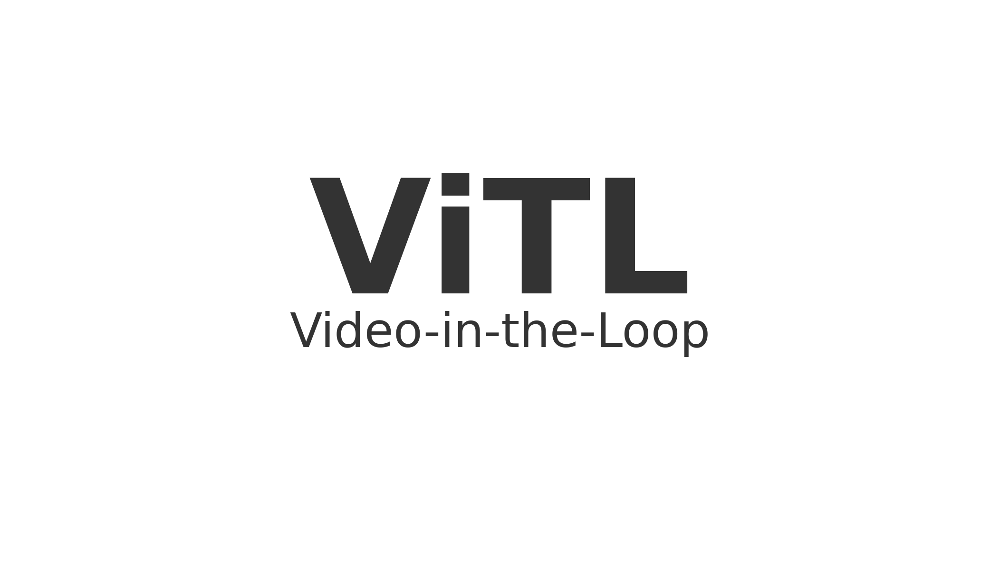
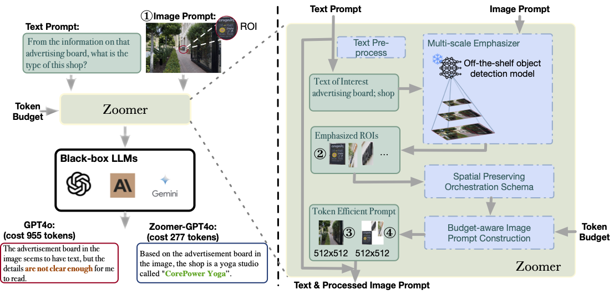
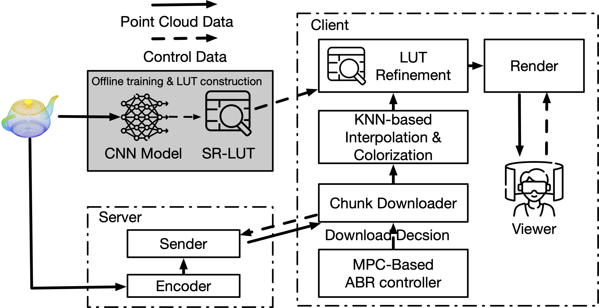

2026/09 - Present
MTS, Training · Fireworks AI
Working on training systems for large-scale AI workloads.
I am an MTS on Training at Fireworks AI. Previously, I did my Ph.D. work in Computer Sciences at the University of Wisconsin-Madison, advised by Prof. Suman Banerjee. My work focuses on scalable training infrastructure, RL-based post-training, high-throughput long-context inference, and systems-agent co-design.
2026/09 - Present
Working on training systems for large-scale AI workloads.
2026/05 - 2026/09
Engineered straggler injection, profiling, and diagnosis workflows for NCCL FasTrak across A3 Ultra and A4 GPU clusters.
2025/05 - 2025/08
Developed production ML pipelines for ads retrieval and built LLM evaluation workflows for retrieval-quality regression tracking.
2024/05 - 2024/08
Optimized PCIe GPU collective communication and studied RDMA scalability bottlenecks for expert-parallel LLM inference.
2023/05 - 2023/08
Improved volumetric-video inference with LUT-based acceleration and drafted work on efficient 3D point-cloud enhancement.

Long-context video reasoning with temporal grounding, evidence localization, and interleaved inference.

Focus-aware image optimization for stronger model quality and efficiency.
Empirical systems study of SAN architecture choices for disaggregated storage.

Learning-enhanced volumetric streaming system for immersive content delivery.
Writing will live here once the blog is ready.
I enjoy basketball and traveling. I am also a fan of Shanghai Shenhua.